台北 ➔ 神戶之夜
06:55 ~ 10:55
高雄 ➔ 關西機場 IT284 航班
07:45 ~ 11:30
台北 ➔ 關西機場 IT710 航班
12:00 ~ 14:15
關西機場吃午餐 午餐
14:30 ~ 15:16
關西機場 ➔ 神戶機場 搭船 交通
15:30
名園 ➔ 療癒綠色掃帚草
06:06
Portliner 往機場 交通
08:10 ~ 09:20
神戶機場 ➔ 茨城機場 SKY182 航班
09:30 ~ 10:00
機場取車 租車
Toyota 租車 / 予約番号 98176045100
10:40 ~ 12:00
午餐: iijima常陸牛本舗 午餐
Google Map
12:00 ~ 13:30
國營常陸海濱公園 景點
Google Map
14:15 ~ 15:45
偕樂園 景點
16:00 ~ 17:00
千波湖 景點
Google Map
17:30 ~ 20:30
飯店晚餐 晚餐
18:30
海洋、動物園與鮮甜魚市
04:20
07:00 ~ 09:00
飯店早餐 早餐
09:00 ~ 11:30
11:30 ~ 13:00
13:10 ~ 13:30
地瓜乾神社 (拍金色鳥居) 景點
📍 Google Map
14:00 ~ 16:00
日立市かみね動物園 景點
📍 Google Map
18:00
20:00
🏠 住宿：一戶貸 住宿
📍 Google Map
飛瀑震懾 ➔ 鬥雞料理 ➔ 郡山
07:50
早餐: 便利商店 早餐
09:00 ~ 10:40
10:55 ~ 12:00
12:15 ~ 13:00
14:40
14:45
水戶車站還車 交通
📍 Google Map
15:15
JR 水郡線 前往郡山市 交通
- 首選 (337D直達)：15:15 水戶發 ➔ 18:30 抵郡山
- 備選 (833D轉車)：16:17 水戶發 ➔ 19:53 抵郡山
晚上
晚餐: まぜそば専門店 凜々亭 郡山本店 晚餐
📍 Google Map
18:45
天鏡湖 ➔ 木造迷宮 ➔ 星野
09:00
09:10 ~ 09:30
吉利蛋公園 景點
📍 Google Map
09:50 ~ 10:30
天神濱 景點
📍 Google Map
10:45 ~ 11:30
長濱(天鵝船) 景點
📍 Google Map
13:45 ~ 15:00
榮螺堂 (Sazaedo) 景點
📍 Google Map
15:15 ~ 17:00
會津若松城 (鶴ヶ城) 景點
📍 Google Map
18:30
飯店晚餐 晚餐
18:00
🏠 住宿：磐梯山溫泉飯店 by 星野集團 住宿
📍 Google Map
神秘五色沼 ➔ 江戶古道
07:45
飯店早餐 早餐
08:30
出發前往五色沼 交通
📍 Google Map
09:00 ~ 10:30
12:00 ~ 13:30
大內宿 茅葺屋聚落 景點
📍 Google Map
13:45
午餐: Hetsuri Garden 午餐
📍 Google Map
14:15 ~ 15:15
參觀奇岩絕景【塔崖】(塔のへつり) 景點
📍 Google Map
19:30
飯店晚餐 晚餐
17:00
悠閒返程 ➔ 福島機場
07:00 ~ 09:00
飯店早餐 早餐
早上
飯店內悠閒泡湯、採買福島特產 景點
下午
驅車前往福島機場 交通
預計車程約 1 小時 15 分鐘
14:00
機場還車 租車
📍 Google Map
16:00 ~ 19:10
✈️ 返回台北 IT753 航班
📸 行程景點總覽
💡 小提示：目前的照片使用免費圖庫連結預覽。若要確保完全離線使用，建議將這些圖片下載至手機，或放在與此 HTML 相同的資料夾中，並將語法改為
<img src="檔名.jpg">。
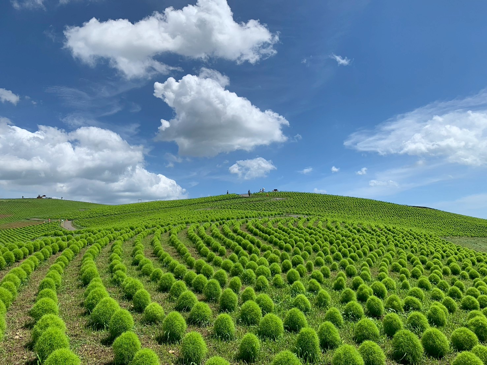
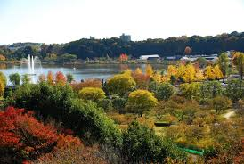
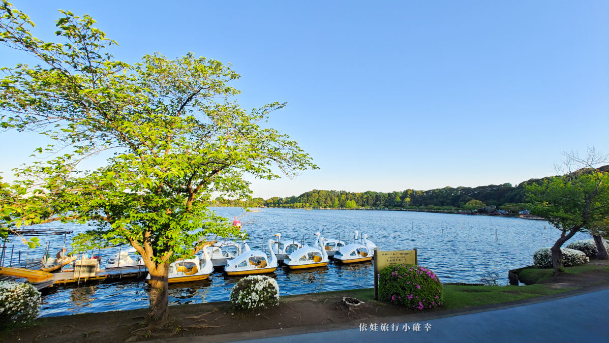
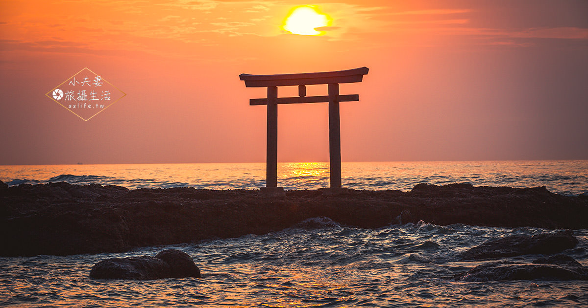
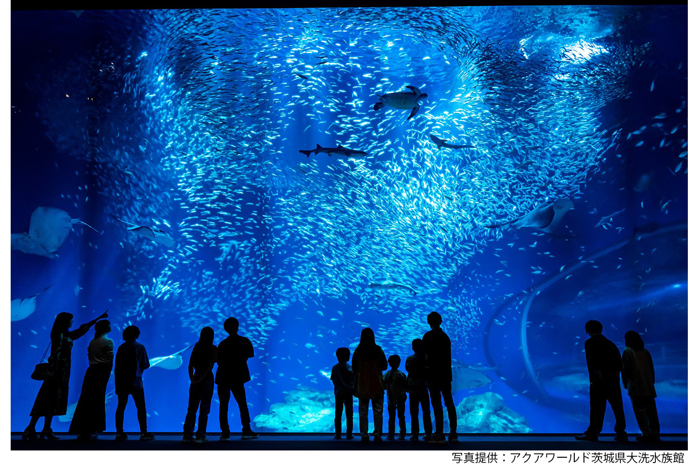
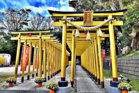
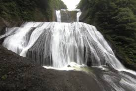
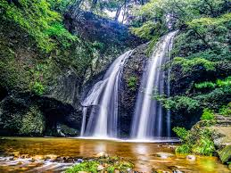
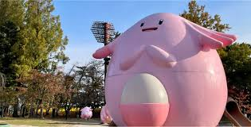
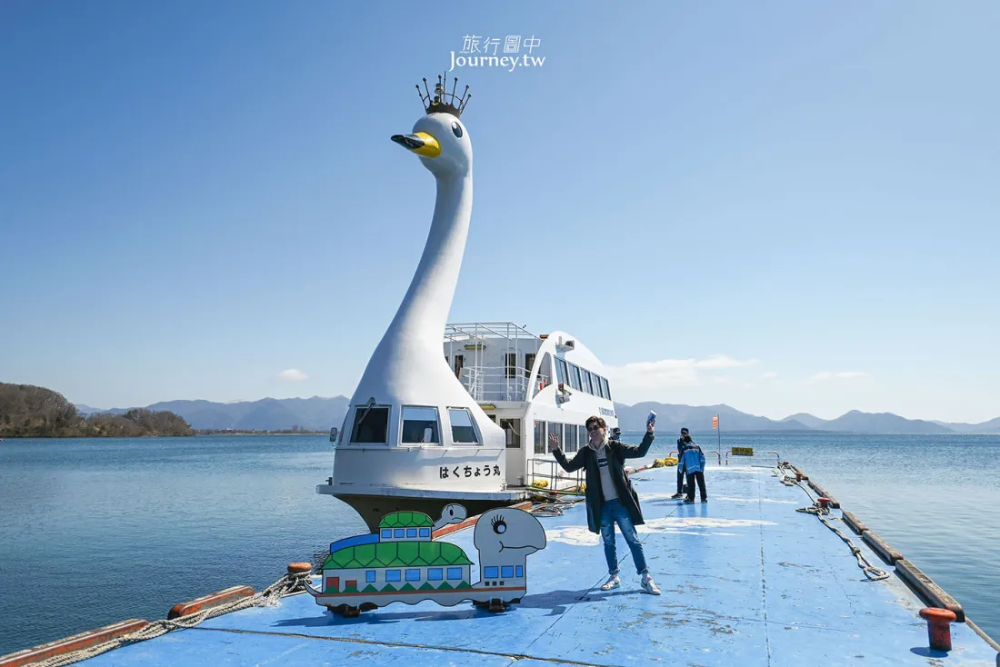
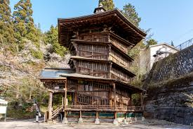
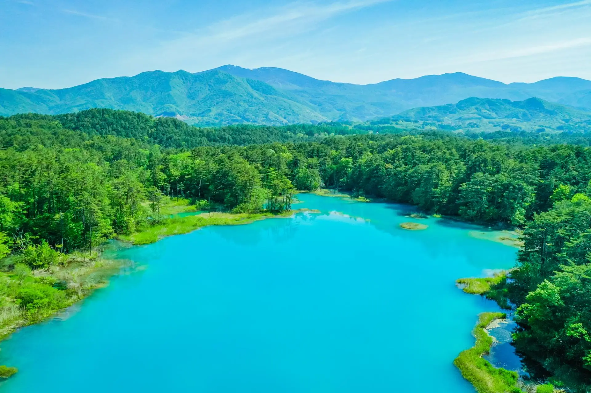
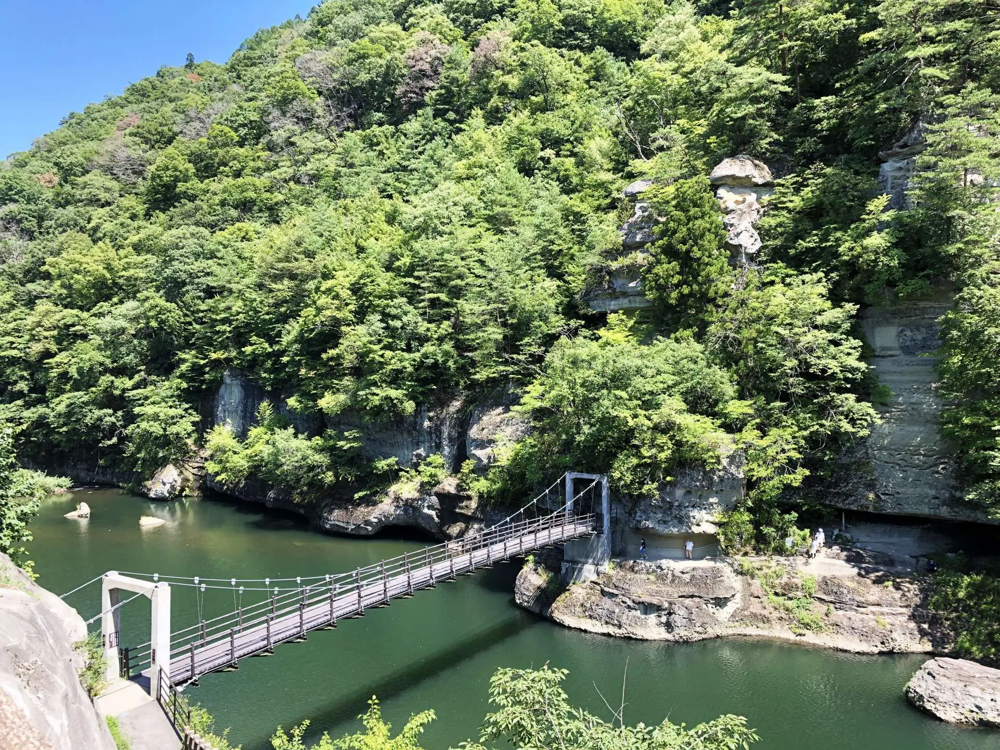
🏠 住宿總覽
6/27 神戶 Portopia 酒店
代號：T45636DE9BC38, T4E8A9B036BCF
地址: 6 Chome-10-1 Minatojima Nakamachi, Chuo Ward, Kobe
📍 Google Map6/30 Dormy Inn EXPRESS 郡山
📍 Google Map7/1 磐梯山溫泉飯店 by 星野集團
📍 Google Map7/2 芦ノ牧温泉 大川荘
📍 Google Map✈️ 航班總覽
去程 (高雄)IT284 (06:55~10:55)
去程 (台北)IT710 (07:45~11:30)
國內線SKY182 (08:10~09:20)
回程IT753 (16:00~19:10)
🚗 租車資訊 (Toyota Rent-a-Car)
第一段：茨城 ➔ 水戶
予約番号：98176045100
期間：6/28 08:00 ~ 6/30 15:00
總額：¥62,700 (W1 class x 2台)
📍 取車：茨城空港店 (TEL:0299-37-2131)
📍 還車：水戸駅南口店
第二段：郡山 ➔ 福島
予約番号：98176046300
期間：7/1 08:00 ~ 7/3 14:00
總額：¥69,300 (W1 class x 2台)
📍 取車：郡山駅新幹線口店 (TEL:024-939-0100)
📍 還車：福島空港店